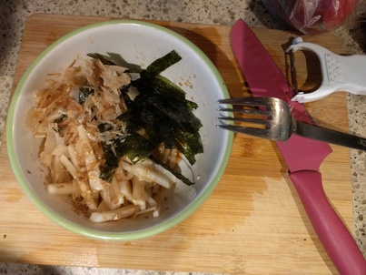

Daikon Salad

Ingredients:
- Daikon (white radish)
- Sesame seeds
- Soy sauce
- Rice Vineger
- Sugar
- Sesame oil
- Bonito flake(fish flakes)
- Shredded nori seaweed
How to make it:
- Put everything in a bowl.
- Cut daikon - pile the skin and cut into thin sticks.
- Add daikon to bowl of dressing and mix.
- Serve with bonito flakes and nori.